Career Design Lab
- Author
- Seth Looper
- My role
- Founding manager: created and ran the program, as Dartmouth staff
- Past collaborators
- Lin Liu, Xiaoxi Tan, Tianyi Tan (2025)
- Setting
- A Dartmouth program the author created and ran as founding manager; no institutional endorsement implied
- Period
- 2024–2026
- Cohort
- Six tools across multiple design-iteration cycles, run within the Dartmouth program each term, 2024–2026
- Status
- Concluded
- Addresses
- RQ 1 · RQ 3
- Methods used
- Card-sort triangulation, Narrative compression, Peer conversation
What this report argues, how far the evidence currently goes, and what would settle it. None of it comes from a formal study; what follows is design rationale and facilitator observation.
Career services at most schools run on a familiar model: one-on-one advising, resume workshops, job boards, alumni directories. That covers the transactional side of career development. It doesn't touch the developmental side, the slower work of figuring out who you are, what drives you, and how to make decisions that reflect your values instead of your anxiety.
At Dartmouth, the gap was visible. Students had access to strong advising and alumni networks, but there was no structured program for the harder stuff: identifying patterns across your own experiences, naming what matters to you, and learning to think clearly about your future with other people in the room.
The question was whether one program could support all of that, changing every term with what students needed instead of running as a fixed curriculum.
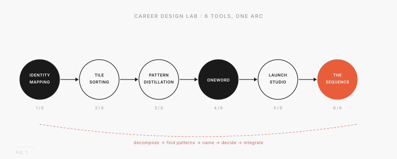
The Career Design Lab is six tools woven into one arc. Each tool was built separately, tried with students, and revised before being integrated into the sequence. Together they move from pulling apart your experiences, to finding patterns, to naming what matters, to deciding what comes next.
The six tools each have their own pedagogical lineage, but the program's overall architecture comes from a small set of frames.
The six-tool deliberation arc draws directly on Burnett & Evans's Designing Your Life (2016), specifically the move from "what's the right answer for me?" to "what's a process I can run on any version of this question?" CDL ported DYL's classroom-tested sequence into a term-long program with cohorts of 15 to 30 students.
OneWord (the final compression tool) is grounded in Dan McAdams's narrative identity framework (McAdams, 1993): identity as a story you keep editing. The compression sequence (paragraph → sentence → word) treats the act of compressing as the developmental work itself, not as a route to a "right" word. My Compression as a method note traces this design move across multiple projects.
Tile Sorting and the values/strengths layer borrow from the Knowdell Career Values card sort and a strengths card sort informed by CliftonStrengths themes, ported into a physical-material format (cards, large-format paper, in-room sorting) rather than online assessment.
The program was structured as an experiential-learning cycle in the Kolb sense (Kolb, 1984), and its workshop format draws on Donald Schön's reflective practitioner tradition (Schön, 1983), specifically Schön's account of how studios teach through repeated cycles of attempt, critique, and revision. My Design cycles, not curricula note documents why this matters.
The developmental target throughout is Baxter Magolda's self-authorship (Baxter Magolda, 2001). The full bibliography is in the working paper.
Identity Mapping Studio
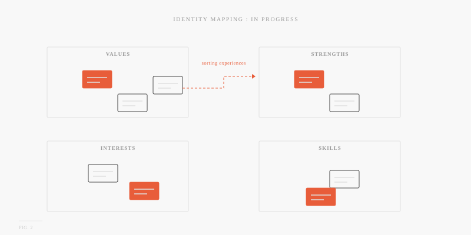
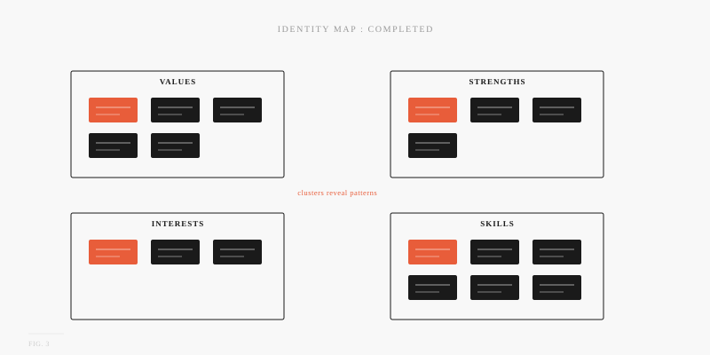
Tile Sorting
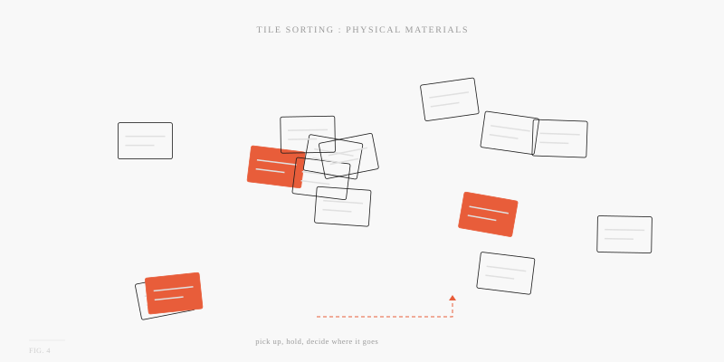
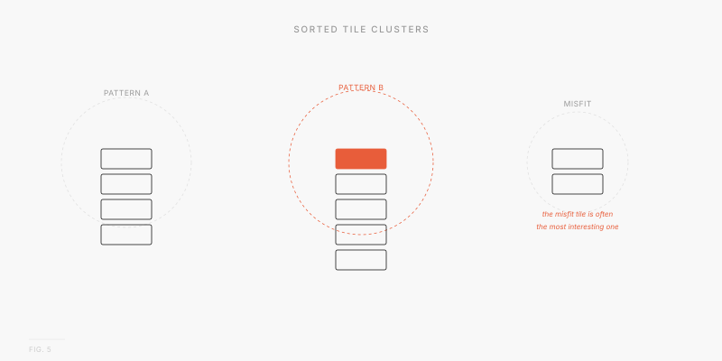
Pattern Distillation
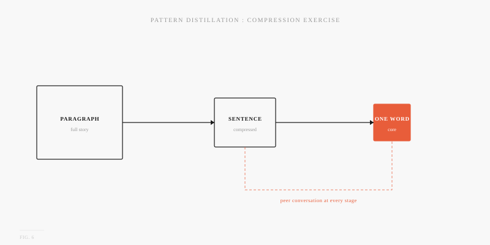
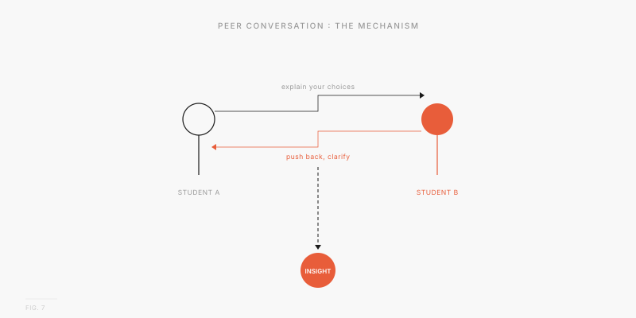
OneWord
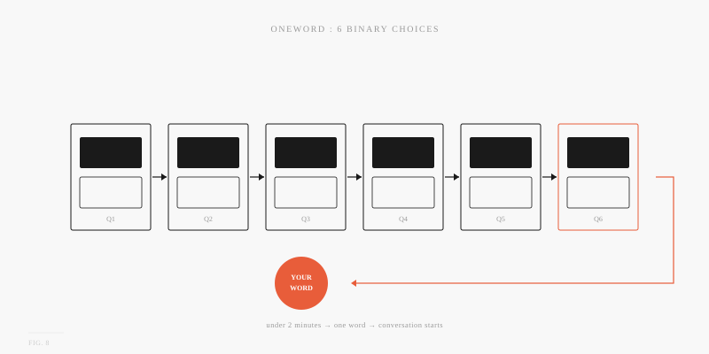
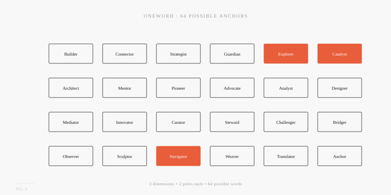
Launch Studio
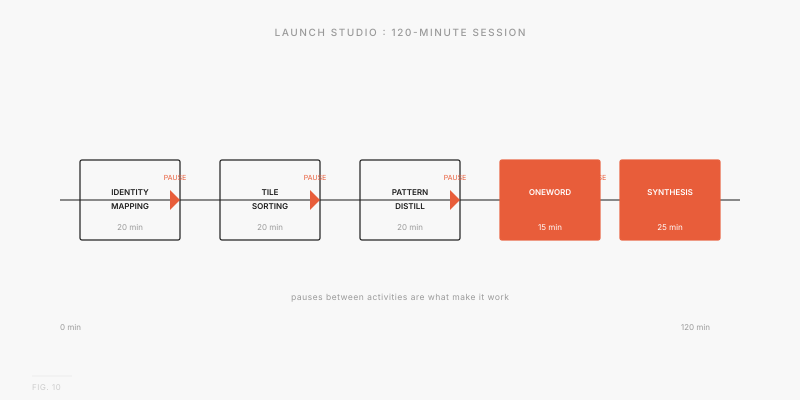

The Sequence
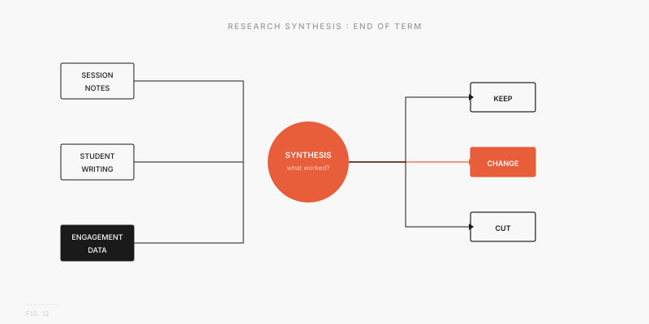
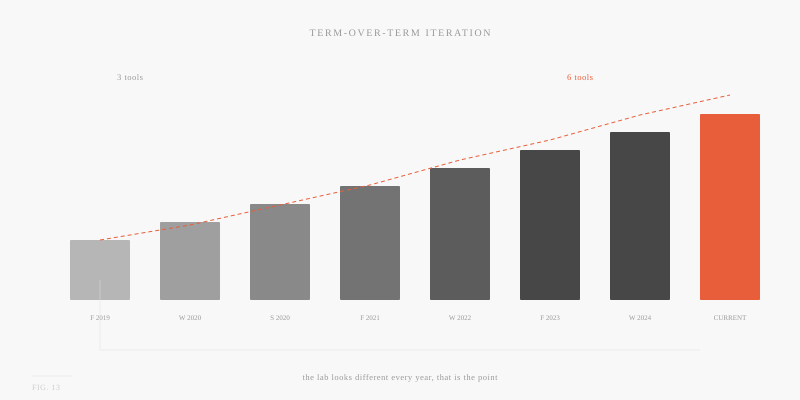
Looper, S. (2026b). The Deliberation Cohort: Six Tools, One Arc. Lo/Be Lab Working Reports, 2026-02. [pdf]
See the full abstract on the publications page.
Material on this site may be cited and reused under CC BY-NC 4.0, with credit to Lo/Be Lab.
For citation requests, collaborations, or pushback on a published claim, seth.looper@gmail.com. Site licensed under CC BY-NC 4.0.